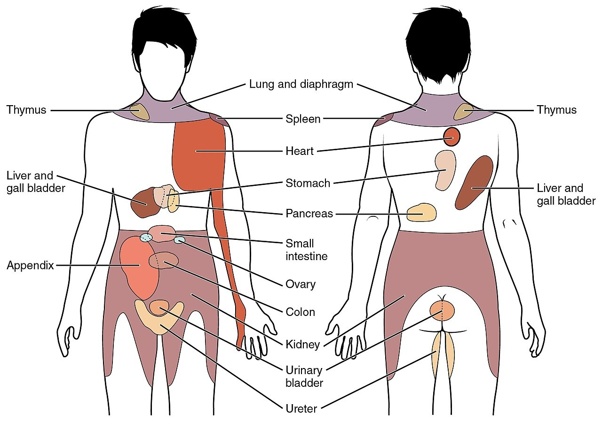
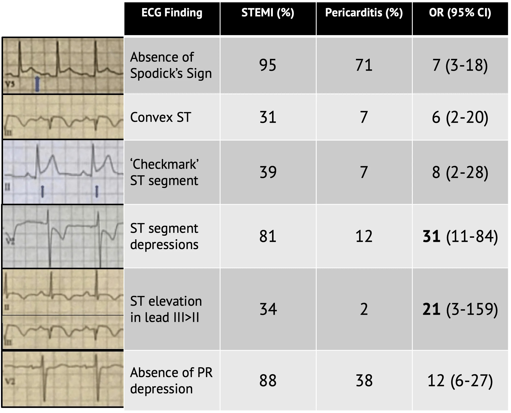
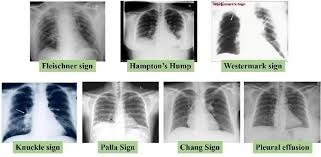

Durerea Toracică
4.1.2 · Cauze · Triaj · Management coronarian · Esențialul în Medicina de Familie (Ghilencea, Bejan)
Durerea toracică e un simptom frecvent întâlnit în practica medicală. Reprezintă un disconfort sau o durere pe care pacientul o simte la nivelul toracelui, între gât și abdomenul superior. Pentru MF, abordarea corectă înseamnă să nu ratezi o cauză amenințătoare de viață și să nu temporizezi o trimitere de urgență.
Etiologia — abordarea în 4 pași
Durerea toracică poate avea cauze cu impact major — amenințătoare de viață, sau minore, fără gravitate imediată. Orice țesut sau organ de la nivelul toracelui poate fi o sursă a durerii incluzând: inima, plămânii, esofagul, mușchii, coastele, tendoanele sau nervii. Abordarea pacientului cu durere toracică se face în patru pași:
- 1Sindroamele coronariene acute
- 2Disecția de aortă
- 3Tromboembolismul pulmonar
- 4Pneumotoraxul în tensiune
- 5Ruptura de esofag
- 1Angina cronică (stabilă/de efort)
- 2Stenoza aortică strânsă
- 3Hipertensiunea pulmonară
- 1Pneumonia acută
- 2Zona zoster preveziculară
- 3Pleurita acută
- 4Miopericardita acută
- 1Colecistita acută sau cronică
- 2Ulcerul peptic
- 3Boala de reflux gastro-esofagian
- 4Discita
- 5Discopatii cervico-toracale
- 6Sindromul Tietze (costocondrita sternală)
Algoritmul de mai jos sintetizează parcursul decizional în cele 4 trepte — click pe fiecare nod pentru detalii.
Abordarea durerii toracice în 4 pași ierarhici
Bazat pe cap. 4.1.2.1 — Esențialul în Medicina de Familie
O altă modalitate de abordare a durerii toracice ține seama de organul afectat (Tabelul 4.1.2.1).
Tabelul 4.1.2.1 — Cauze ale durerii toracice după organul afectat (după Tse, Lip, Coats, modificat)
| Cauze | Afecțiunile cele mai frecvente |
|---|---|
| Cardiovasculare | IMA, angina instabilă, angina stabilă, spasm coronarian (angina Prinzmetal, abuzul de cocaină), anomalii coronariene, sindrom tako-tsubo, pericardită, miocardită, colecție pericardică, cardiomiopatie hipertrofică, prolaps de valvă mitrală, anevrism de aortă, disecție de aortă |
| Pulmonare | Colecție pleurală, pneumotorax, pneumonie, tromboembolism, carcinom bronhopulmonar, hipertensiune pulmonară |
| Musculoscheletale | Zona zoster (preveziculară), afecțiuni ale coloanei cervicale (discale, inflamatorii, tumorale), inflamația mușchilor centurii scapulare, fractură de coaste, sindrom Tietze, infecția mușchilor intercostali (boala Bornholm) |
| Aparatul gastro-intestinal | Ulcer peptic, colecistită, pancreatită, spasm esofagian, cancer esofagian, sindrom Mallory-Weiss |
B) GREȘIT — Sindromul Mallory-Weiss e cauză GI (Tabel 4.1.2.1) — sângerare gastrică după vărsături, nu printre cele 5 urgențe.
C) GREȘIT — Carcinomul bronhopulmonar e cauză pulmonară (Tabel 4.1.2.1), nu amenințătoare de viață acut.
E) GREȘIT — Pancreatita e afecțiune gastro-intestinală cu durere iradiată, pasul 4.
Diagnostic clinic — triajul pacienților cu DT
Triajul pacienților cu durere toracică cuprinde: istoricul/anamneza țintită, examenul fizic orientat, ECG, iar acolo unde este posibil, radiografia toracică și examenele de laborator.
Anamneza trebuie să stabilească cu exactitate
- 1Prezența durerii în momentul examinării — identifică pacienții cu risc crescut.
- 2Localizarea DT — epigastrică, retrosternală, laterotoracică, posterioară. Durerea anginoasă este centrală, retrosternală.
- 3Iradierea DT — în umeri, brațe, gât, maxilarul inferior, epigastru.
- 4Tipul durerii toracice — junghi, ascuțită, ca o presiune, ca o greutate, arsură sau constrictivă.
- 5Debutul durerii — când a debutat și dacă debutul este brusc sau insidios.
- 6Antecedentele patologice de boală coronariană — IMA, by-pass aortocoronarian, angioplastie coronariană, stroke; și dacă DT prezentă seamănă cu cea anterioară.
- 7Factorii de risc pentru boală coronariană — diabetul zaharat, HTA, hipercolesterolemia, fumatul, istoricul familial de boală coronariană.
- 8Alte simptome — transpirații, dispnee, palpitații, sincopă, oboseală, greață, vărsături.
- 9Ce influențează DT — ameliorează la repaus, la aplecarea înainte, sau la NTG; se accentuează la efort, emoții, inspirul profund, ingestie, tuse, poziția sau mișcările trunchiului, abuzul de cocaină. Severitatea durerii pe o scală de la 1 la 10.
Examenul clinic
Examenul clinic la pacientul cu durere toracică este un examen fizic rapid, insistând asupra aparatului cardiovascular și respirator, folosind metodele de inspecție, palpare, percuție, auscultație.

- Ce observi: zonele de iradiere tipice menționate în anamneză (elementul 3) — umeri, brațe, gât, maxilarul inferior, epigastru.
- Ce observi: zonele de iradiere tipice menționate în anamneză (elementul 3) — umeri, brațe, gât, maxilarul inferior, epigastru.
- Ce sugerează: durere cardiacă anginoasă când se asociază cu localizare retrosternală constrictivă.
- Diferențial vizual: iradiere interscapulară = disecție aortă; durere laterotoracică fără iradiere = pleurală.
Tabelul 4.1.2.2 — Examenul fizic al pacientului cu durere toracică
| Examenul fizic | Aspectul | Semnificația |
|---|---|---|
| Aspectul general, inspecția și palparea | Anemie, icter, aspectul unghiilor, mucoaselor, tegumentelor pentru cianoza de tip central, aspectul tiroidei | |
| Inspecția și palparea Vv jugulare | Turgescența venelor jugulare | Insuficiență cardiacă |
| Reflux hepatojugular | Insuficiență cardiacă | |
| Semnul Kussmaul în inspir | Constricție | |
| Palparea Aa carotide | Puls slab și întârziat (Pulsus parvus et tardus) | Stenoza aortică |
| Tensiunea arterială | Diferențe semnificative la cele 2 brațe | Disecția aortică |
| HTA/hipotensiune severă | Necesită intervenție urgentă | |
| Puls paradoxal (scăderea TAS cu peste 10 mmHg la sfârșitul inspirului) | Tamponadă cardiacă | |
| Palparea șocului apexian | Deplasat lateral față de LMV | HVS |
| Deplasat lateral și inferior | VD mărit | |
| Palparea toracelui | Rash toracic | Posibil zona zoster preveziculară |
| Reproducerea durerii la presiune | Rar este durere toracică | |
| Auscultația zgomotelor cardiace | Zgomot 3 audibil | Insuficiență cardiacă |
| Zgomot 4 audibil | HTA, insuficiență cardiacă | |
| Auscultația suflurilor cardiace | Frecătură pericardică | Pericardită |
| Suflu sistolic rugos crescendo-descrescendo, aria aortică, iradiere carotidiană | Stenoza aortică | |
| Suflu sistolic aspirativ constant apical | Regurgitare mitrală (ischemia miocardică/dilatarea VS, endocardită) | |
| Suflu diastolic aspirativ în aria aortică | Regurgitare aortică (endocardită, disecția de aortă) | |
| Suflu sistolic dur la 3-7 zile de la IMA | DSV post-infarct miocardic | |
| Percuția toracelui | Matitate toracică | Pneumonie, colecție pleurală |
| Auscultația plămânilor | Wheezing | Bronhoconstricție, insuficiență cardiacă |
| Raluri crepitante | Pneumonie | |
| Raluri subcrepitante | Edem pulmonar acut în IMA | |
| Absența murmurului vezicular | Pneumotorax în tensiune | |
| Inspecția, palparea abdomenului | Ascită, ficat pulsatil, mărit de volum | Insuficiență cardiacă |
| Durere în hipocondrul drept | Colecistită | |
| Durere epigastrică | Ulcer peptic, pancreatită | |
| Membrele inferioare | Edem unilateral al gambei/coapsei | Tromboză venoasă profundă |
| Edem bilateral | Insuficiență cardiacă |
Caracteristici clinice în funcție de organul afectat
Caracteristicile durerii toracice diferă în funcție de organul afectat, fiind însoțite și de alte simptome sau semne:
- Astmul bronșic, pneumonia, pneumotoraxul sau pleurita-colecția pleurală sunt acompaniate de dispnee sau tuse. În aceste cazuri, durerea toracică se accentuează deseori la respirație (inspirație) profundă ori la tuse. Wheezing-ul însoțește obstrucția căilor aerifere mici din astmul bronșic.
- Contractura și inflamațiile peretelui toracic precum condrita costală din sindromul Tietze produc durere toracică.
- Durerea toracică iradiată dată de afecțiuni digestive: boala de reflux gastroesofagian (BRGE), litiaza veziculară, dischinezia biliară, ulcerul gastric, indigestia, gastrita. Durerea din afecțiunile veziculei biliare se accentuează de obicei după un prânz bogat în grăsimi. Durerea din ulcerul duodenal este accentuată când stomacul este gol și este diminuată de alimentație.
- Junghiul toracic, cu dispnee, în special după o lungă călătorie sau după un repaus la pat prelungit (peste 3 zile), în urma unei intervenții chirurgicale sau a unei tromboze venoase profunde a membrelor inferioare poate fi semnificativ pentru tromboembolismul pulmonar.
- La copii, cele mai frecvente dureri toracice nu sunt de cauză cardiacă. Dacă traumatismul, tusea produc afectare musculară, atunci peretele toracic este dureros la palpare în locul respectiv.
Intensitatea durerii
În funcție de intensitatea durerii, durerile toracice pot fi împărțite în dureri toracice intense chiar atroce, persistente (infarctul miocardic, pericardita, pleurezia, pneumotoraxul, anevrismul disecant de aortă) și dureri toracice de intensitate mai mică, intermitente (angina pectorală stabilă de efort, durerile parietale toracice, durerile toracice cu componentă psihoneurotică), bolnavul prezentând o stare de sănătate aparent normală între accese.
C) GREȘIT — Factorii modulatori sunt elementul 9 (repaus, aplecare înainte, NTG pentru ameliorare; efort, inspir, tuse pentru agravare).
D) GREȘIT — Localizarea e elementul 2 al anamnezei (retrosternală, epigastrică, laterotoracică, posterioară).
E) GREȘIT — Iradierea e elementul 3 (umeri, brațe, gât, maxilar, epigastru).
Diagnostic paraclinic — ECG, radiografie, teste
ECG — obligatoriu în durerea toracică
Examenul ECG este obligatoriu în durerea toracică. Este importantă comparația cu examenele ECG anterioare pentru sesizarea modificărilor nou apărute.
- Supradenivelarea tipică a segmentului ST („sad face") în 2 derivații alăturate și subdenivelarea ST în oglindă → STEMI (infarctul miocardic cu supradenivelare de segment ST).
- Supradenivelarea ST în aVR → sugerează o leziune de trunchi coronarian stâng sau de boală tricoronariană.
- Supradenivelarea difuză concordantă cu unda T, cu subdenivelarea segmentului PR („happy face") → sugerează o pericardită.
- Subdenivelarea segmentului ST (orizontală sau descendentă) → sugestivă pentru ischemia miocardică, apare în NSTEMI.
- Blocul complet de ramură stângă (BRS) nou apărut → echivalentul unei supradenivelări de segment ST în contextul durerii toracice.
- Apariția undei T negative (inversarea undei T) → nu este specifică, dar poate sugera ischemia în contextul durerii toracice.
- Aspectul S1Q3T3 (undă S în derivația D1, undă Q în derivația D3, inversarea undei T în derivația D3) → puțin sensibil, dar atunci când apare sugerează tromboembolismul pulmonar.

Tool diagnostic pentru cele 3 modificări ECG cheie menționate în cap. 4.1.2.2. Supradenivelarea ST localizată cu imagine în oglindă = STEMI. Supradenivelarea difuză concordantă cu unda T + subdenivelarea PR = pericardită. Aspectul S1Q3T3 sugerează TEP. Compararea cu ECG-uri anterioare e esențială pentru a depista modificări nou apărute." data-sursa="https://journalfeed.org/article-a-day/2020/differentiating-stemi-from-pericarditis/">Tool diagnostic pentru cele 3 modificări ECG cheie menționate în cap. 4.1.2.2. Supradenivelarea ST localizată cu imagine în oglindă = STEMI. Supradenivelarea difuză concordantă cu unda T + subdenivelarea PR = pericardită. Aspectul S1Q3T3 sugerează TEP....
Tool diagnostic pentru cele 3 modificări ECG cheie menționate în cap. 4.1.2.2. Supradenivelarea ST localizată cu imagine în oglindă = STEMI. Supradenivelarea difuză concordantă cu unda T + subdenivelarea PR = pericardită. Aspectul S1Q3T3 sugerează TEP. Compararea cu ECG-uri anterioare e esențială pentru a depista modificări nou apărute.
Radiografia toracică — complementară celorlalte investigații
Examenul radiologic al toracelui este complementar celorlalte investigații.
- Lărgirea mediastinului → sugerează disecția de aortă.
- Lărgirea umbrei cardiace → sugerează colecție pericardică.
- Semnul lui Hampton → sugerează TEP.
- Condensarea pulmonară → sugerează pneumonia acută bacteriană.
- Colecția de aer localizată apical, cu dispariția desenului bronho-vascular → sugerează pneumotoraxul.

Panel radiografic corespunzător celor 5 semne descrise în cap. 4.1.2.2: mediastin lărgit (disecție aortă), umbră cardiacă lărgită (colecție pericardică), semnul Hampton (TEP), pneumotorax apical cu dispariția desenului bronho-vascular, condensare (pneumonie)." data-sursa="https://www.facebook.com/santanaheartsd/posts/different-radio-graphical-signs-on-chest-x-ray-of-pulmonary-embolism%EF%B8%8F-foamed-med/572667765528266/">Panel radiografic corespunzător celor 5 semne descrise în cap. 4.1.2.2: mediastin lărgit (disecție aortă), umbră cardiacă lărgită (colecție pericardică), semnul Hampton (TEP), pneumotorax apical cu dispariția desenului bronho-vascular, condensare (pneumonie).
Testele diagnostice folosite
Testele diagnostice folosite sunt: analize biochimice (hemoleucograma, glicemia, fibrinogen, VSH, colesterol total, HDL-colesterol, LDL-colesterol, trigliceride, troponină, CPK, saturația sângelui arterial în oxigen SaO₂), ECG, ECG la efort, radiografia pulmonară, cateterism cardiac, ecocardiografia, ecografia abdominală.
B) GREȘIT — NSTEMI are subdenivelare ST orizontală sau descendentă, nu supradenivelare în aVR.
D) GREȘIT — Pericardita dă supradenivelare difuză concordantă cu unda T + subdenivelare PR („happy face"), nu în aVR izolat.
E) GREȘIT — TEP se asociază cu aspectul S1Q3T3, nu cu supradenivelare în aVR.
Diagnostic diferențial
Diagnosticul diferențial al durerii toracice se face pe baza caracteristicilor clinice ale anginei (cap. 4.1.2.3) și pe baza organului afectat (Tabel 4.1.2.1).
Angină tipică (3/3)
- Durere retrosternală constrictivă, cu iradiere în brațe, maxilar sau gât
- Apare la efort
- Cedează în repaus
- Probabilitate pre-test mai mare de boală coronariană
Angină atipică (2/3) · Non-anginoasă (0-1/3)
- Are 2 din 3 caracteristici (angină atipică) sau 0-1 din 3 (durere ne-anginoasă)
- Poate lipsi componenta de efort sau cea de ameliorare în repaus
- Probabilitate pre-test mai mică de boală coronariană
- Necesită evaluare diferențială atentă
Pentru diagnosticul diferențial pe organ, Tabelul 4.1.2.1 (prezentat în Capitolul 1) enumeră toate afecțiunile grupate pe sistem: cardiovascular, pulmonar, musculoscheletal, gastro-intestinal.
Managementul pacienților cu DT de cauză coronariană
STEMI, NSTEMI, angina instabilă
Pentru pacienții cu durere toracică tipică pentru IMA (cu modificări ECG de STEMI sau NSTEMI) sau angină instabilă, planul este urgent, fiind imediat îndrumați, de preferat cu o ambulanță dotată corespunzător, către cea mai apropiată unitate de primiri urgențe cu o clinică de cardiologie apropiată.
Angina stabilă cu debut recent
Pentru pacienții care se prezintă la medicul de familie cu durere toracică stabilă cu debut recent, după o evaluare clinică inițială, protocolul de lucru presupune stabilirea probabilității existenței unei boli coronariene, pe baza:
- istoricului,
- vârstei,
- sexului,
- factorilor de risc ai pacienților.
Angina tipică este definită ca fiind durerea toracică retrosternală cu următoarele caracteristici: 1. de natură constrictivă, la nivel retrosternal, cu iradiere în brațe, maxilar sau gât; 2. apare la efort; 3. cedează în repaus.
Angina atipică are 2 din cele 3 caracteristici, iar durerea ne-anginoasă are una sau niciuna din cele trei caracteristici.
Evaluarea clinică
În evaluarea clinică se iau în considerare:
- 1ECG de repaus — BRS complet, undă Q, modificări ST/T ce pot indica un eveniment ischemic.
- 2Tratamentul factorilor de risc CV.
- 3Diagnosticele alternative (ex: BRGD, musculo-scheletal).
- 4Excluderea altor cauze ne-coronariene de angină, precum stenoza aortică severă sau cardiomiopatia hipertrofică.
- 5Reevaluarea testelor de sânge pentru identificarea cauzelor care ar putea exacerba angina (ex: anemia).
Planul de lucru pentru pacienții cu angină stabilă este menționat la capitolul 4.3.3 (angina cronică).
C) GREȘIT — 2 din 3 caracteristici = angină atipică (nu tipică).
D) GREȘIT — Sunt doar 2 criterii din cele 3 — ar încadra pacientul ca angină atipică.
E) GREȘIT — 1 sau 0 caracteristici = durere ne-anginoasă (nu tipică).
Ghidurile actuale vs Esențialul în Medicina de Familie
Conținutul cărții Esențialul în Medicina de Familie este concordant cu principiile fundamentale ale ghidurilor actuale. Ghidurile ESC Acute Coronary Syndromes 2023 și ESC Chronic Coronary Syndromes 2024 au adus totuși actualizări importante pe care un practician trebuie să le cunoască.
Pentru examen, rămâne valid conținutul din carte. Pentru practica clinică actuală, mai jos sunt evidențiate discrepanțele principale, cu linkuri către ghiduri.
1. Terminologie SCA — NSTE-ACS unificat
Ghidul ESC ACS 2023 tratează NSTEMI + angina instabilă împreună ca NSTE-ACS.
ESMF (carte)
- 3 entități: STEMI · NSTEMI · Angină instabilă
- Angina instabilă = troponină normală + modificări ECG ischemice
- Pentru examen: folosește 3 entități separate
ESC 2023
- 2 entități: STEMI · NSTE-ACS (include NSTEMI + UA)
- Angina instabilă rară în era hs-troponinei — reclasificată ca NSTEMI
- Pentru practică: NSTE-ACS e termenul standard
2. Algoritm troponină 0/1h
Ghidul ESC ACS 2023 (Section 4.2 — Diagnosis) validează algoritmul 0/1h cu hs-troponină ca Clasa I pentru rule-in/rule-out rapid al NSTEMI.
ESMF (carte)
- Troponină + CPK-MB la prezentare
- CPK ca alternativă
- Rezultat în ore
ESC 2023
- hs-troponină 0/1h algoritm Clasa I
- CPK-MB obsolet în rutină
- Rezultat în 1 oră
3. Stratificarea riscului cu HEART score
Cartea nu menționează un scor standardizat. Practica actuală în UPU europeană folosește frecvent HEART score (History, ECG, Age, Risk factors, Troponin) ca suport decizional. Publicație originală: Backus et al. 2013 (free full-text PMC).
ESMF (carte)
- Evaluare clinică + ECG + troponină, decizie clinică
- Fără scor cantitativ
- Adecvat cabinetului MF
Practică UPU actuală
- HEART score (0-10) · ≤3 = risc scăzut · ≥7 = risc înalt
- Scor reproductibil standardizat
- Adecvat UPU
4. Probabilitatea pre-test — Risk Factor-weighted Clinical Likelihood
Ghidul ESC CCS 2024 recomandă RF-CL (Risk Factor-weighted Clinical Likelihood) care integrează simptome + vârstă + sex + factori de risc ponderați.
ESMF (carte)
- 3 criterii clinice (tipică/atipică/non-anginoasă) + judecata clinică
- Decizie: test efort / angio-CT
- Didactic și simplu
ESC CCS 2024
- RF-CL — 3 criterii + vârstă + sex + 5 FR ponderați
- RF-CL <5% → nu testa · 5-15% → angio-CT · 15-85% → test funcțional · >85% → coronarografie
- Reduce testele inutile
5. BRS nou apărut — criterii Sgarbossa/Smith
Ghidul ESC ACS 2023 nuanțează: BRS nou fără criterii Sgarbossa/Smith-modified NU se tratează automat ca STEMI.
ESMF (carte)
- BRS nou = echivalent STEMI → reperfuzie imediată
- Trimitere directă la cateterism
ESC 2023
- BRS nou → aplică criterii Sgarbossa / Smith-modified
- Sgarbossa pozitive → cateterism · Negative → monitorizare + troponină dinamic
6. Oxigen și morfină
Ghidul ESC ACS 2023 (Section 5 — Pharmacological therapy) recomandă:
Practică clasică
- Oxigen rutinier la toți
- Morfină ca rutină pentru durere
ESC 2023
- Oxigen doar dacă SaO₂ <90% (hiperoxia e nocivă)
- Morfină doar la durere refractară la NTG (întârzie P2Y12)
Sinteză
Cartea rămâne un instrument didactic valid și concordant cu principiile fundamentale ale ghidurilor actuale. Diferențele țin de:
- terminologie (NSTE-ACS unificat),
- instrumente cantitative (hs-troponină 0/1h, HEART, RF-CL),
- ajustări fine (oxigen restrictiv, morfină restrictivă, BRS nuanțat).
Referințe complete:
- ESC Guidelines for Acute Coronary Syndromes 2023 (Byrne et al., European Heart Journal)
- ESC Guidelines for Chronic Coronary Syndromes 2024 (Vrints et al., European Heart Journal)
- HEART score calculator — MDCalc
- Sgarbossa criteria calculator — MDCalc
- HEART score original publication — Backus 2013, free PMC
(1) Sindroamele coronariene acute · (2) Disecția de aortă · (3) Tromboembolismul pulmonar · (4) Pneumotoraxul în tensiune · (5) Ruptura de esofag.
(1) Natură constrictivă, retrosternală, cu iradiere în brațe, maxilar sau gât; (2) Apare la efort; (3) Cedează în repaus. 3/3 = tipică · 2/3 = atipică · 0-1/3 = non-anginoasă.
STEMI = supradenivelare ST tipică în 2 derivații alăturate + subdenivelare ST în oglindă. Pericardită = supradenivelare difuză concordantă cu unda T + subdenivelare PR.
Tromboembolism pulmonar. Componente: undă S în D1, undă Q în D3, inversarea undei T în D3. Puțin sensibil — absența NU exclude TEP.
Mediastin lărgit → disecție aortă · Umbră cardiacă lărgită → colecție pericardică · Semnul Hampton → TEP · Condensare → pneumonie bacteriană · Aer apical cu dispariția desenului bronho-vascular → pneumotorax.
(1) ECG de repaus · (2) Tratamentul factorilor de risc CV · (3) Diagnostice alternative · (4) Excluderea cauzelor ne-coronariene de angină · (5) Reevaluarea testelor de sânge.
Pacient cu durere toracică tipică
Bărbat 62 ani, fumător, HTA cu tratament inconstant, diabet zaharat tip 2. Se prezintă la cabinetul MF pentru durere toracică retrosternală, debutată în urmă cu ~40 min, persistentă, cu iradiere în brațul stâng și mandibulă, asociată cu transpirații și greață.
Examen fizic: TA 165/95 (simetric ambele brațe), puls 88, SaO₂ 95%, murmur vezicular prezent bilateral, zgomote cardiace ritmice fără sufluri.
B) GREȘIT — a 3-a caracteristică („cedează în repaus") nu e îndeplinită — durerea persistă.
D) GREȘIT — are 2 caracteristici (iradiere constrictivă + apariție la efort), nu doar una.
E) GREȘIT — are cel puțin 2 caracteristici prezente.
B) GREȘIT — Paracetamolul nu tratează ischemia miocardică.
C) GREȘIT — Întârzierea evaluării unei dureri toracice persistente la un pacient cu factori de risc = eroare majoră.
D) GREȘIT — Test de efort programat e util pentru angina stabilă, nu pentru DT acută cu factori de risc multipli.
ECG-ul arată supradenivelare ST 3 mm în D II, D III, aVF, cu subdenivelare ST în oglindă în D I și aVL.
B) GREȘIT — Pericardita dă supradenivelare difuză concordantă cu unda T + subdenivelare PR. Aici avem supradenivelare localizată teritorial (inferior).
D) GREȘIT — NSTEMI e definit prin subdenivelare ST orizontală/descendentă — nu supradenivelare.
E) GREȘIT — BRS e modificare de morfologie QRS, nu supradenivelare ST.
B) GREȘIT — Trimiterea programată e pentru angina stabilă, nu pentru STEMI acut.
D) GREȘIT — Cartea specifică UPU cu clinică de cardiologie, nu medicină internă generică.
E) GREȘIT — STEMI NU se tratează ambulator.
Diagnostic final: STEMI inferior (supradenivelare ST în D II, D III, aVF + subdenivelare în oglindă), pacient cu multipli factori de risc CV (fumător, HTA, DZ tip 2).
Lecții cheie din ESMF:
- Angina atipică = 2 din 3 caracteristici (cap. 4.1.2.3).
- ECG obligatoriu în orice durere toracică + comparație cu trasee anterioare (cap. 4.1.2.2).
- STEMI = supradenivelare ST tipică în 2 derivații alăturate + subdenivelare în oglindă (cap. 4.1.2.2).
- Plan pentru DT tipică pentru IMA = ambulanță la cea mai apropiată UPU cu clinică de cardiologie (cap. 4.1.2.3).